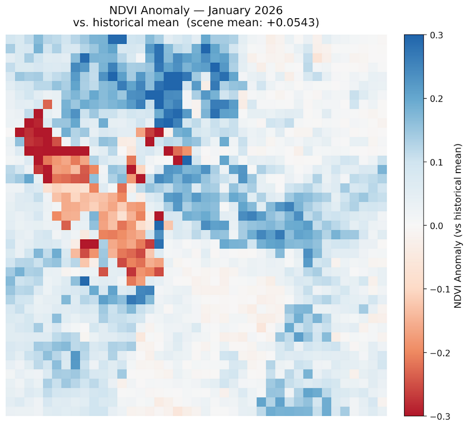
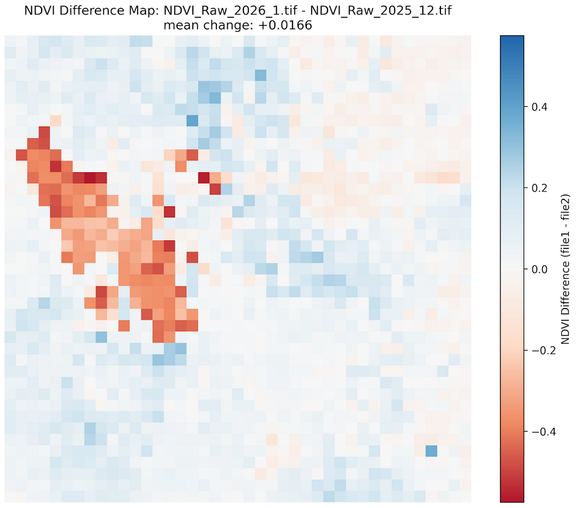
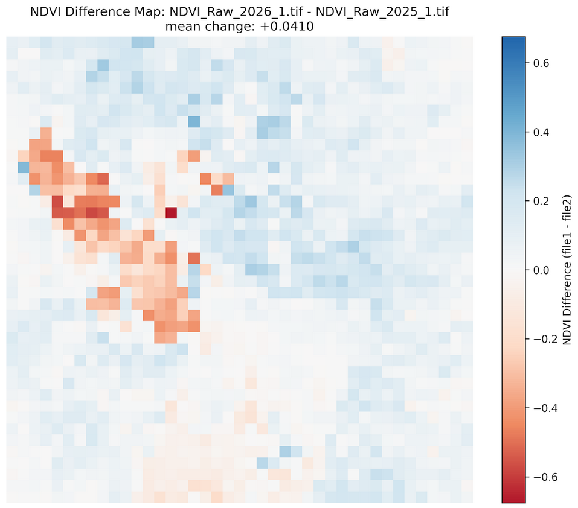

Monthly Report · Issue 02
January 2026
Vegetation dynamics across the Wasatch Front
By Scott Vars
Vegetation dynamics across the Wasatch Front
By Scott Vars
Raw vegetation index across the Wasatch Front for January 2026. Much of the Wasatch Front lay within the 0.1-0.35 range, with small, individual outliers at upwards of 0.4, or even some small areas going as high as 0.6. The lake values (Great Salt Lake and Utah Lake), are both at 0 as normal. Winter NDVI values are inherently low across the region, however, the meaningful signal lies not in absolute values but in how this month compares to the historical record and to adjacent months.

NDVI was very anomalously high for January 2026, with an average increase in NDVI of about +.054. This is a very large increase in vegetation from last January, showing much higher-than-average vegetation. We saw a much higher increase in vegetation specifically in the northern part of the Wasatch Front, where we see increases of upwards of 0.2/0.3 NDVI. The Salt Lake Valley area as well as surrounding Utah Lake areas showed relatively little increase from the seasonal norm, although arid areas East and West of that showed a slight increase as well.
The increase is likely driven by snowmelt exposing underlying vegetation rather than new plant growth. Snow suppresses NDVI by masking ground cover and as it melts, readings rise even with no ecological change. The significant increase in the northern region of the Wasatch Front is likely due to the dismal snow season in the North part of Utah, where they received little to no snow. Thus, much of the area's vegetation was exposed.

NDVI increased slightly overall from December to January, with the most significant losses in the northwestern areas of the Front, specifically the Cache Valley areas. These minor losses in NDVI, typically losing around 0-0.2 NDVI, are likely due to localized storms or cold retention. Early January had lots of active weather, contributing to snowfall which the Northwestern Wasatch Front was favored to retain. Although the early part of January was meteorologically active, however, it was still considered a snow drought and overall the map is very much a blue wash as we see vegetation increased all throughout the Wasatch Front.
The decrease in NDVI in the Northwestern regions is likely due to localized storms and cold fronts, while all other areas increased overall since December, suggesting the December snowpack is failing as we move into the next month. While early January was active for snowfall, high temperatures created snowmelt and further exposed vegetation.

The sharp decrease over the actual lake area of the Great Salt Lake are likely due to remote sensing artifacts, so please disregard. They are likely not real readings and when looking at the raw NDVI maps, they did not change at all. Lake area is very consistently 0 NDVI.
Compared to January 2025, we see that overall the entire Wasatch Front region shows higher NDVI in 2026, with a mean change of +.041, although some of the lower-elevation areas such as the Salt Lake Valley show a slight decrease, though it is barely noticeable. Additionally, we can see some of the banks of the Great Salt Lake grow in vegetation, suggesting parts of the lake shoreline is receding as well.
Higher mountain NDVI in 2026 does not indicate healthier vegetation, it reflects less snow cover. Bare dormant ground reads higher than snow-covered ground. This is a snow drought signal masquerading as greenness.

January 2026 showed a clear NDVI increase from December 2025, particularly in mountainous areas, driven by snowmelt exposing vegetation rather than new growth. Compared to January 2025, mountain regions appear greener while valley regions declined slightly, a pattern consistent with ongoing snow drought conditions across the region.
The January increase highlights how winter NDVI is dominated by snow cover dynamics rather than vegetation health. Anomalously high mountain NDVI in January 2026 should be read as a warning signal, not a positive indicator.
NDVI values derived from Landsat 8 TOA median composites at 5.5km resolution. Difference maps computed from raw NDVI prior to any normalization. Historical comparisons use the 2013–2026 Landsat archive.
Landsat 8/9 imagery courtesy of the U.S. Geological Survey via Google Earth Engine.
NOAA National Centers for Environmental Information, Monthly Climate Reports and drought summaries.